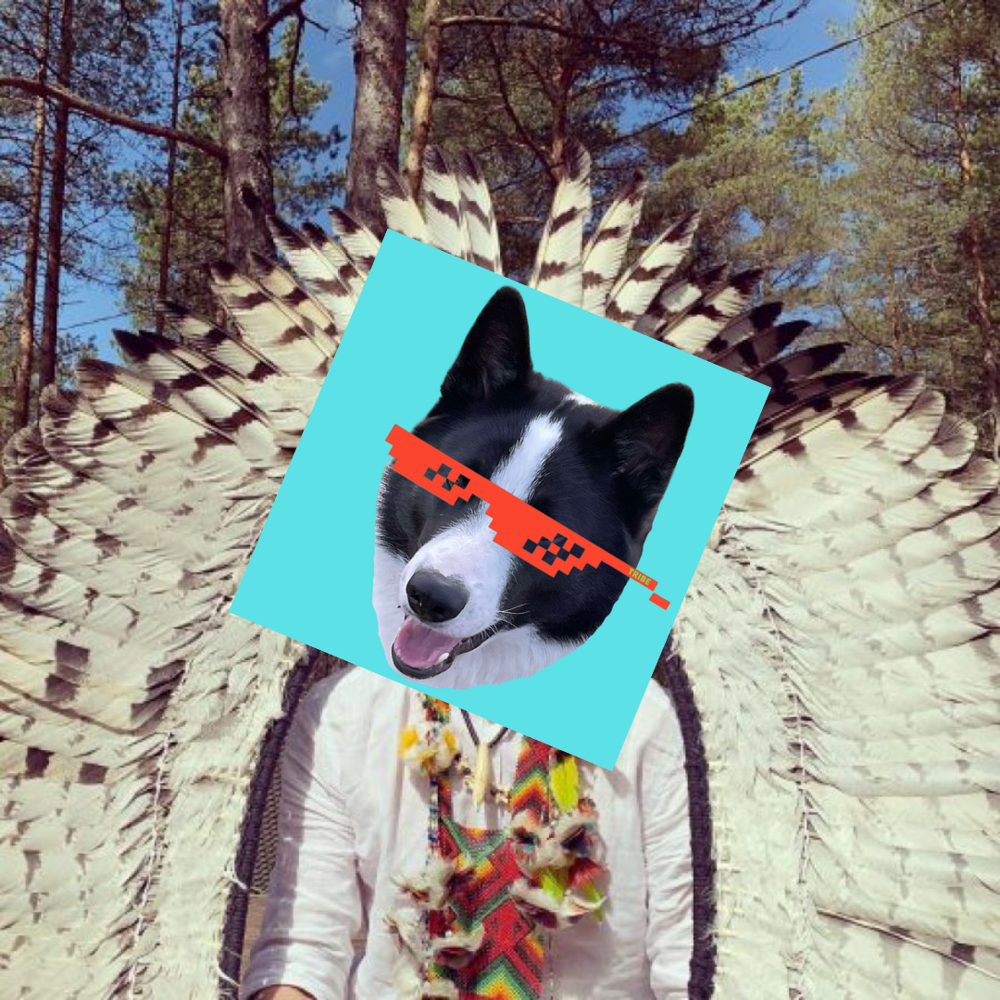

Our mission is to connect you to the source of the universe and your heart. Bond, heal, awaken and grow.
About Us
This is will be my life's work. I'm starting this to grow a community, a foundation, a belonging and a shire. It’s just me and my family with an accumulated 40 years of experience with plant medicines and spirituality. I started as a spoiled and repressed mama's boy that was suicidal by 20 and I went to start a family with my childhood crush, lived with 100 year old shamans in the rainforest, finished spiritual initiations, climbed Chinggis Khans’s mountain to pursue my roots and experienced enlightenment. And I've faced my struggles during ascension like lack of a supportive group. I want to grow a network of like-minded people and share my life, my family, our values and wisdom of a harmonious future. I feel I have become a man and a leader.
Membership
Since I want to work on this project during my own life's flow, I don't want to make any money from it. We need to cover the costs for the organizing team. Every Sacred Founders applicant is interviewed, vetted, and researched before they’re invited. We will only accept a compatible vibe match into our community. The price for a yearly membership is currently undecided but there will be one in the hundreds or thousands dollars yearly.
Mission
My mission is to connect you to the source. The source of earth, the sun, the universe and your heart. I’ve never wanted to make money with this. I think it’s been more of a way of life and lifestyle of mine. I wish to support this organization or foundation or whatever you want to call it, with my own business earnings, yearly donations and yearly memberships. So that we can achieve our vision and make life a better place for peopleVision
My vision with this is to have a group of like-minded individuals who gather, connect and grow together. I want to share this journey together with my family. Ideally one day have our own resort where it's legal to grow cannabis and mushrooms for ceremonies. The location should be vibrant nature where you can mix growth with health and activities like surfing and yoga, MMA and calisthenics. Guide other fellow entrepreneurs around campfires and hold space for healing and clearing.
One on one's
As of now my ceremonial space is hidden in the forests of Hiiumaa. I go there to meditate and play music on my land around my campfire. If you want to spend 4 days with me and my family you can apply here. The price tag is €2000 for this time. Depending on time and logistics. I’m not really selling this but would be an interesting experience for both me and fellow seeker / founder. Send me an email at pafka@hey.com
Read my story
Sign up to newsletter and receive your free copy of my journey or read it here .
Family man
I'm married to Jennifer. Together we have two kids, two dogs and two cats.
Pictures
